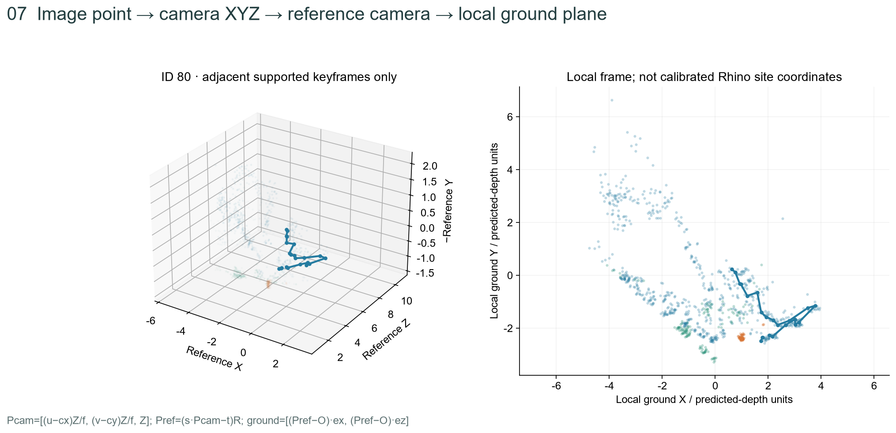
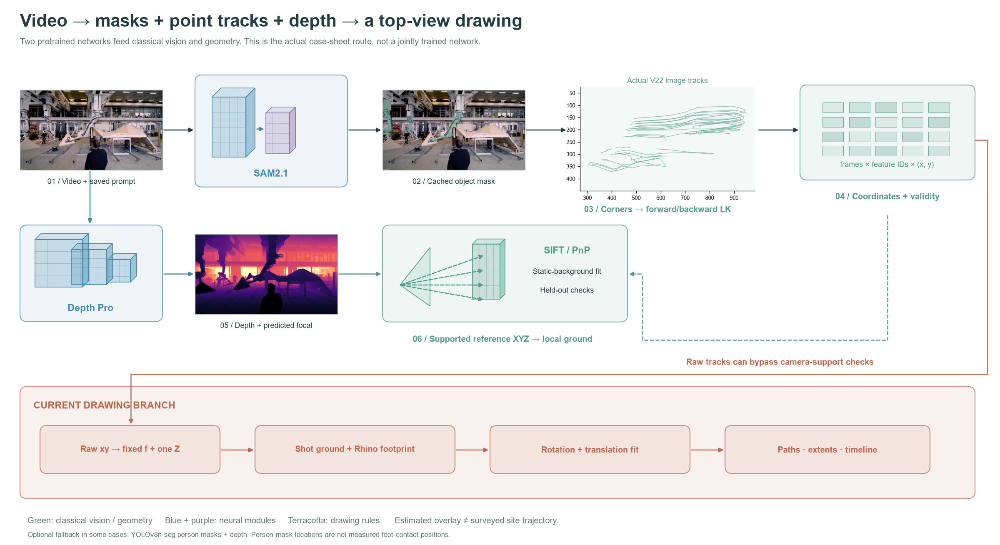
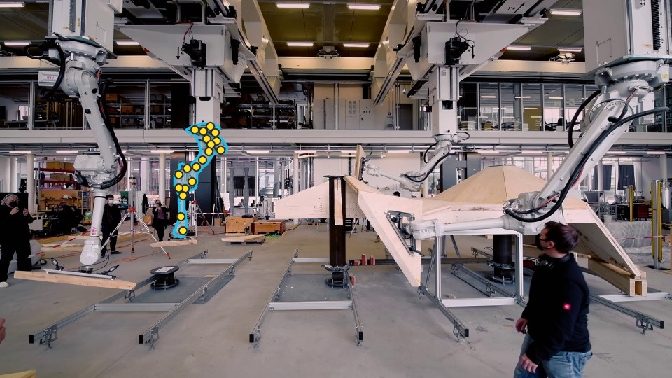
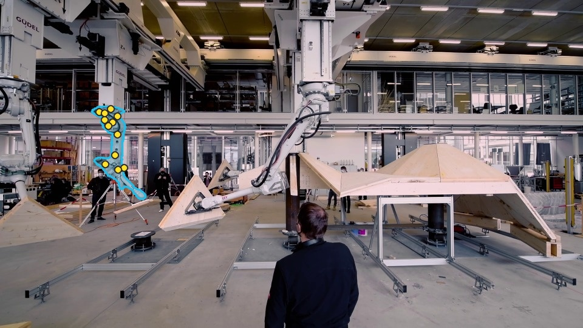
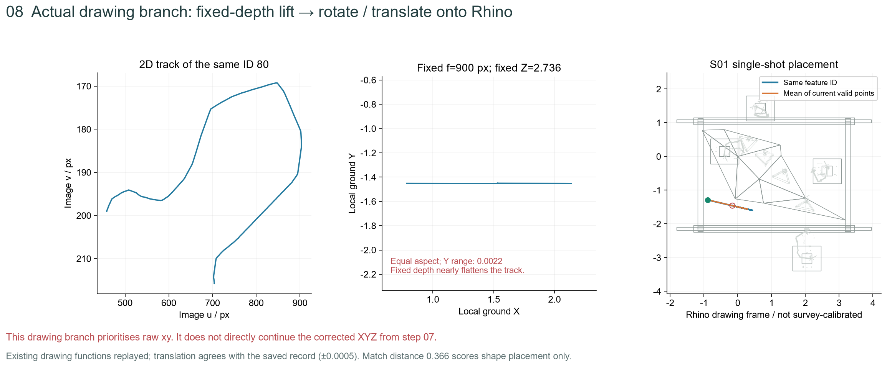
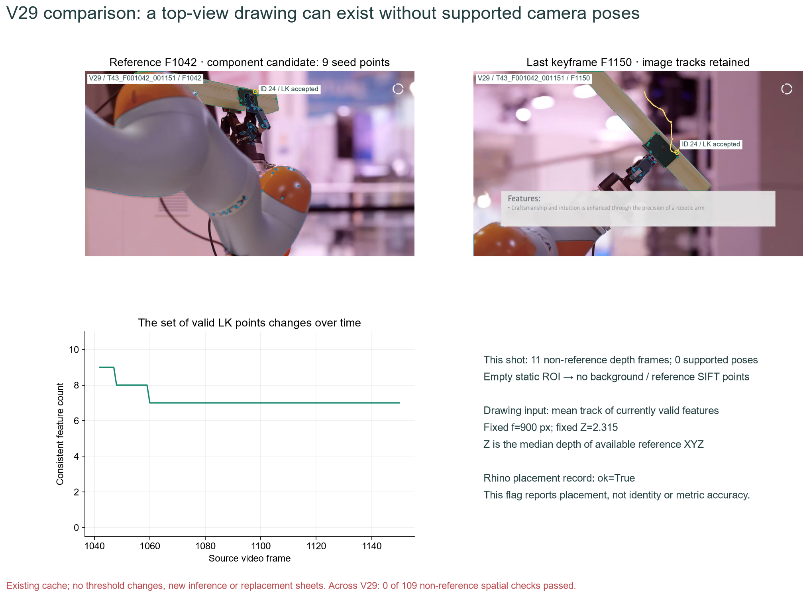
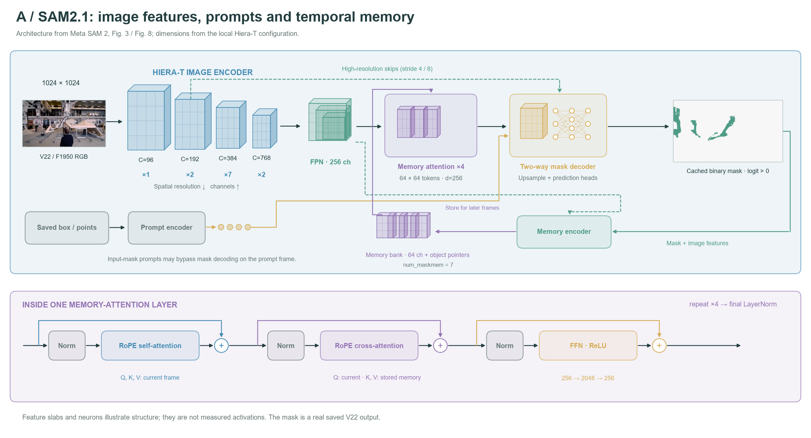
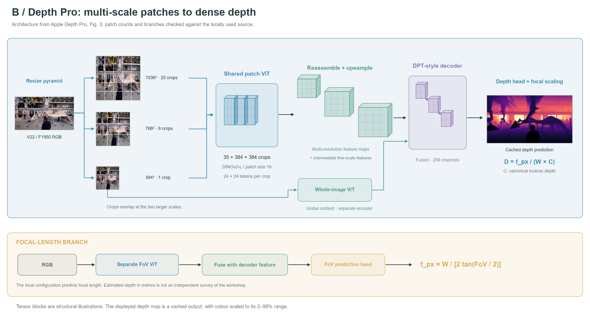
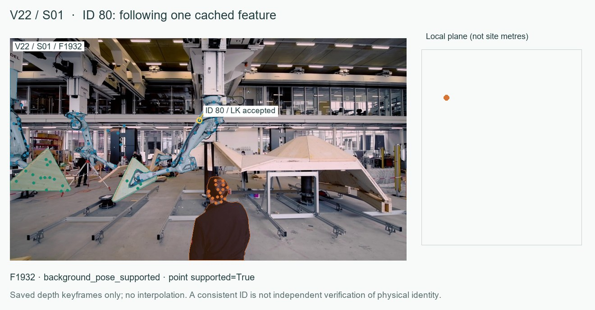

Supported local spatial track


Depth Pro, background camera fitting and geometric checks produce a track in the shot’s local ground plane. V22 S01 has camera support on 21/22 non-reference keyframes.
MultiCam
Follow a V22 video shot through segmentation and point tracking to the local spatial track and the Rhino case-sheet overlay.

V22 S01 follows surface features from video into two outputs with different coordinate assumptions. The local spatial track uses camera and depth checks. The case-sheet overlay uses simplified depth and placement on a Rhino plan.
SAM2.1 propagates the reviewed F2032 mask through all 211 frames. Yellow points in the video belong to the supplemental robot.
Every frame has at least one LK-consistent feature in the exclusive mask (211/211). The local spatial checks retain at least one feature on 22/23 depth keyframes.



Depth Pro, background camera fitting and geometric checks produce a track in the shot’s local ground plane. V22 S01 has camera support on 21/22 non-reference keyframes.

The drawer lifts image tracks with a fixed focal length and one depth per path, then rotates and translates the shot footprint onto the Rhino plan. Placement is schematic.

V29 has no initialised static-background ROI, so the frozen spatial extractor receives an empty reference region. None of its 109 non-reference depth keyframes has a supported camera pose. The drawer independently fits a ground footprint from prompt-frame depth and can still place it on a plan. This explains why a drawing can exist while the spatial branch has not passed.
Feature slabs, token grids and arrows show the computation. They are schematic, not measured activations. The example RGB, mask and depth images are real V22 cache outputs. Open either figure for a larger view.

Redrawn from SAM 2, Fig. 3 and Fig. 8, with the local SAM2.1 Hiera-T configuration. Editable SVG.

Redrawn from Depth Pro, Fig. 3, and the local encoder source. Editable SVG.
Tensor blocks illustrate changing spatial resolution and channels, not every channel or a measured activation. Thin links show data flow; bypass arrows show feature or residual skips. The image pyramid uses an illustrative crop grid; the actual fine-scale crops overlap.
The two pretrained models run separately. This project did not train the combined pipeline end to end. Corners, optical flow, camera fitting and Rhino placement are outside these networks. Optional person masks in some cases use YOLOv8n-seg as already documented.
Meta SAM2 source · Apple Depth Pro source · Previous module-level diagram
V22 S01 · the yellow marker follows original object S01_robot_02, feature ID 80. The left image shows the feature in the source frame. The right plot shows its supported path in the shot’s local ground plane, with gaps at unsupported keyframes.

The spatial columns come from different branches and coordinate frames. Their difference is not an accuracy measure. The yellow example is selected by the most cached valid frames, breaking ties by the smallest ID; the original query is unchanged.
| Frame | Image (u,v) / px | Spatial support | Local ground XY | Simplified drawing XY |
|---|---|---|---|---|
| F1932 | 458.16, 199.03 | True | 0.620, 0.230 | -0.887, -1.290 |
| F1942 | 469.87, 196.20 | True | 0.754, 0.124 | -0.852, -1.298 |
| F1950 | 488.00, 195.00 | True | 0.925, -0.312 | -0.798, -1.311 |
| F1952 | 493.67, 194.66 | True | 0.970, -0.338 | -0.782, -1.315 |
| F1962 | 526.58, 194.79 | True | 1.213, -0.777 | -0.684, -1.337 |
| F1972 | 571.19, 196.40 | True | 1.589, -0.647 | -0.552, -1.368 |
| F1982 | 619.80, 193.29 | True | 1.737, -1.406 | -0.408, -1.401 |
| F1992 | 662.37, 185.34 | True | 1.932, -1.580 | -0.282, -1.431 |
| F2002 | 715.90, 174.05 | True | 2.194, -1.694 | -0.123, -1.469 |
| F2012 | 766.62, 171.60 | True | 2.358, -1.878 | 0.027, -1.504 |
| F2022 | 825.94, 169.77 | True | 2.797, -1.716 | 0.202, -1.544 |
| F2032 | 873.68, 173.70 | True | 3.496, -1.236 | 0.344, -1.577 |
| F2042 | 902.68, 181.60 | True | 3.780, -1.148 | 0.430, -1.597 |
| F2052 | 899.17, 187.23 | True | 3.156, -1.779 | 0.419, -1.594 |
| F2062 | 887.45, 191.46 | True | 3.024, -1.861 | 0.384, -1.586 |
| F2072 | 857.62, 194.81 | True | 3.008, -1.667 | 0.296, -1.565 |
| F2082 | 824.88, 198.30 | True | 2.661, -1.879 | 0.199, -1.542 |
| F2092 | 789.59, 202.02 | True | 2.164, -2.319 | 0.095, -1.518 |
| F2102 | 753.62, 205.74 | True | 2.042, -2.271 | -0.012, -1.493 |
| F2112 | 720.50, 208.58 | False | N/A | -0.110, -1.470 |
| F2122 | 702.60, 214.38 | True | 1.775, -2.357 | -0.163, -1.457 |
| F2132 | 704.33, 215.78 | True | 1.790, -2.349 | -0.158, -1.458 |
| F2142 | 704.33, 215.76 | True | 1.724, -2.482 | -0.158, -1.458 |
These links open the archived original sheets, which retain their original language. Extent fills, endpoints and spines belong to the drawing layer; a surface-point extent is not a full-arm sweep or human footprint.
The main figure contains only the modules used by these case sheets. These selected historical experiments explain limits and choices; they are not a shared benchmark, and they do not prove LK is better than CoW. Historical comparisons are unchanged. V2 reruns supplemental SAM2, LK and geometric checks for S01.
SAM2 supplies object masks; Shi–Tomasi + bidirectional LK supplies surface-feature tracks; Depth Pro supplies depth. Camera checks and Rhino placement remain explicit code stages.
This describes the executed implementation, not a claim that this combination wins every comparison.
Segmentation source · Tracking sourceV29 has 0 / 109 supported non-reference spatial keyframes, yet the drawing branch still emits an overlay. Fixed focal length, fixed depth and footprint alignment are drawing assumptions.
A visible line or a successful placement flag is not a verified site trajectory.
See V29 evidence · Saved auditAcross three diagnostic clips, original / CLAHE-2 / CLAHE-1 retained the same main-query support: 19 / 19 / 19, 33 / 33 / 33, and 3 / 3 / 3. Bilateral + CLAHE also did not increase those counts.
Keep the original greyscale tracking input. Short-window gains did not produce longer support for these queries; this is not a rejection of all enhancement or training augmentation.
| Clip | Original | CLAHE 2 | CLAHE 1 | Main-query support, same order |
|---|---|---|---|---|
| V27_split | 67 | 71 | 68 | 19 / 19 / 19 |
| V08_closeup | 420 | 420 | 420 | 33 / 33 / 33 |
| V08_assembly | 17 | 15 | 14 | 3 / 3 / 3 |
First three numeric columns count overlapping seed × window tests, not independent correct frames. Main-query support is an LK diagnostic, not verified identity accuracy.
At F208, changing memory frames 206–207 → 204–205 increased visibility 0.0624 → 0.9213. M and WM each produced 62 / 121 output frames, versus 59 for A.
The gate recovered locally. Physical-point accuracy was not measured in this experiment. WM added a window change without increasing output count; an earlier-memory rule was not established. CoW remains separate from this sheet generator.
| Arm | F208 visibility | Output frames / 121 |
|---|---|---|
| A | 0.0624 | 59 |
| M | 0.9213 | 62 |
| WM | 0.9844 | 62 |
A: original. M: earlier memory only. WM: earlier memory + longer window. Original query and 0.1 score gate were held fixed. Higher visibility is not identity truth.
In the saved G03_T09 test, frames with any point available increased 163 → 167 / 211, while additional accepted main-point estimates remained 0.
More observations did not establish recovery of the original point. This arm was not inserted as an automatic repair stage in the sheet generator.
Per-target support recordFor F1946–1949, the original reference supplied 1 corner and 0 supported lines per frame. A local candidate reference supplied 5–6 corners and 0–1 lines, but all four joint estimates still failed the existing checks.
Neither reference yielded accepted recovery. The graph used fixed propagation, not new training; the candidate reference also had unresolved identity. This does not establish that every hypergraph approach fails.
Landmark / graph recordEvaluation boundary: output count, LK consistency, fitting residual and physical identity are different measures. The 10 px identity criterion was not relaxed, and none of the proxy counts above is presented as a 10 px accuracy score. Historical case names refer to those archived runs.
Visual pipeline SVG · SAM2 architecture SVG · Depth Pro architecture SVG · Eight-stage overview PNG · Point replay GIF · Readme